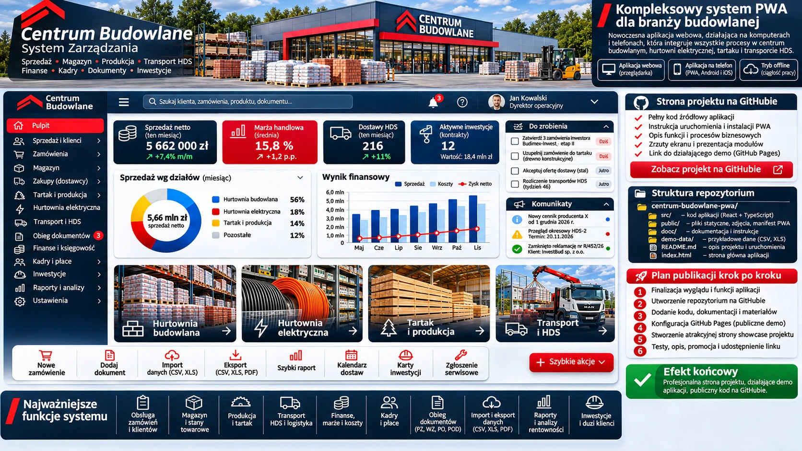
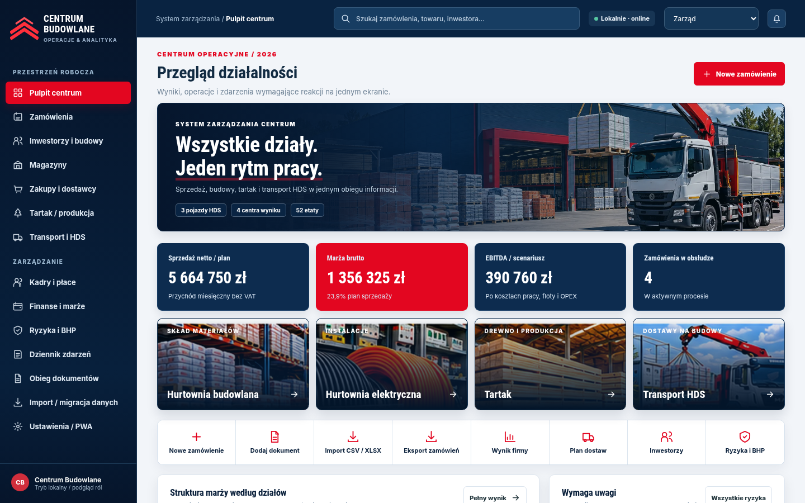

Jedno centrum.
Wiele procesów.
Jeden system.
Operacyjne zaplecze dużej hurtowni budowlanej: sprzedaż, elektryka, tartak, inwestorzy, magazyny, transport HDS, finanse i dokumenty w jednym interfejsie.
System zaprojektowany na przykładzie wielodziałowego centrum budowlanego.
Procesy nie kończą się
na granicy działu.
Inwestor zamawia materiały budowlane, przewody elektryczne i elementy więźby. Handlowiec przygotowuje jedną wycenę. Magazyn kompletuje towar, tartak realizuje produkcję, a dyspozytor planuje transport. Dokumenty trafiają do biura bez ponownego wprowadzania numerów.
Cztery światy.
Jedna organizacja.
Każdy dział ma osobne operacje i koszty, ale pracuje na wspólnych zamówieniach, kartotekach kontrahentów i dokumentach.
Hurtownia
budowlana
Stany, zamówienia, marże, rezerwacje i wydania materiałów.
Otwórz moduły ↗Hurtownia
elektryczna
Cenniki, zakupy, kable, osprzęt i kontrola marż.
Otwórz moduły ↗Tartak
i produkcja
Surowiec, uzysk, zlecenia, koszt jednostkowy i gotowe wyroby.
Otwórz moduły ↗Transport
i HDS
Flota, trasy, potwierdzenia odbioru i koszty eksploatacji.
Otwórz moduły ↗Od pierwszego telefonu
do zamknięcia dostawy.
Jeden obieg dla handlu, magazynu, tartaku, transportu i księgowości, z kontrolą odpowiedzialności na każdym etapie.
Zapytanie i wycena
Inwestor, budowa, ceny, marża i dostępność materiałów.
Zatwierdzenie
Limity kredytowe, rezerwacje i akceptacja rabatów.
Przygotowanie
PZ, WZ, kompletacja i zlecenia tartaku.
Dostawa HDS
Przydział pojazdu, kierowca, załadunek i POD.
Rozliczenie
Akceptacja dokumentów, wyjątki, należności i rentowność.
Jeden obraz całego systemu.
Wybrana grafika była punktem odniesienia dla palety i układu aplikacji. Pokazuje wizję pulpitu z hurtownią, elektryką, tartakiem i transportem HDS. Zawarte w niej liczby są przykładowe.

Otwórz pełny obraz ↗Gotowe ekrany.
Realne scenariusze.
Otwórz poszczególne widoki. Demonstracja działa w przeglądarce na komputerze i telefonie oraz zapisuje zmiany lokalnie.

Sytuacja firmy na jednym ekranie.
Sprzedaż, marże, najpilniejsze zdarzenia i skróty do czterech działów.
Przeklikaj demo ↗Inny widok.
Inne zadania.
Role odpowiadają rzeczywistemu podziałowi pracy. W demo można przełączać je bez logowania, aby obejrzeć przepływ z różnych perspektyw.
Zarząd
Pełny przekrój wyników, kosztów zatrudnienia, marż działów, należności, floty i ryzyk operacyjnych.
Przełącznik ról w tej wersji ma charakter prezentacyjny. Bezpieczne konta pracowników i współdzielona baza danych wymagają wdrożenia backendu.
Przygotowane do
testowania i rozwoju.
Wersja demonstracyjna jest statyczną aplikacją JavaScript z PWA. Może działać na GitHub Pages, bez stawiania serwera aplikacyjnego.
PWA i instalacja
Manifest, service worker i możliwość uruchomienia w osobnym oknie z ekranu głównego telefonu.
Import i eksport
CSV, TSV, XLSX, tabele HTML, kopie JSON oraz dokumenty dostaw.
Obieg operacyjny
Zamówienia, magazyn, produkcja tartaku, transport, dokumenty i kalkulacje finansowe.
Świadome ograniczenia
Praca lokalna na jednym urządzeniu. Pełna synchronizacja i konta użytkowników pozostają etapem produkcyjnym.
Jeden projekt. Dwie ścieżki poznania.
Strona prezentacyjna pozwala poznać ideę i przebieg pracy. Demo pozwala przetestować funkcje, role oraz scenariusze.
Procesy wreszcie
pracują razem.
Poznaj pełną aplikację od strony zarządu, handlowca, magazyniera i kierowcy HDS.